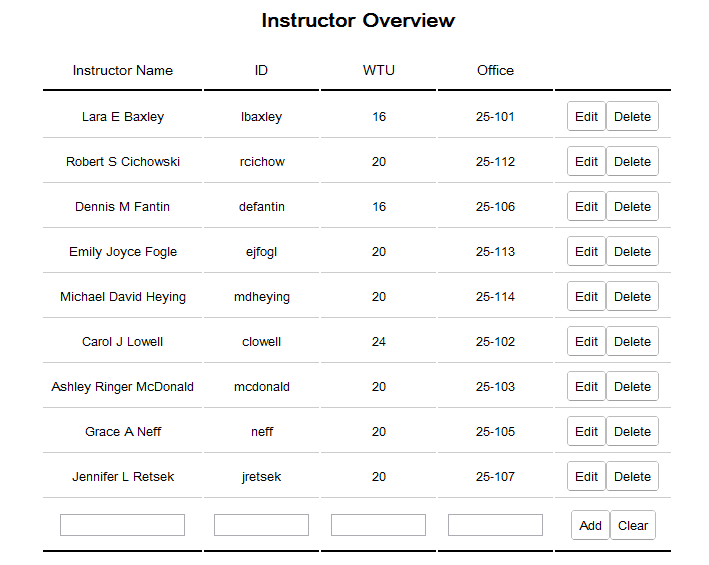
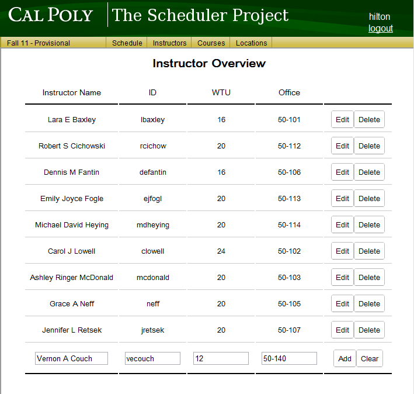
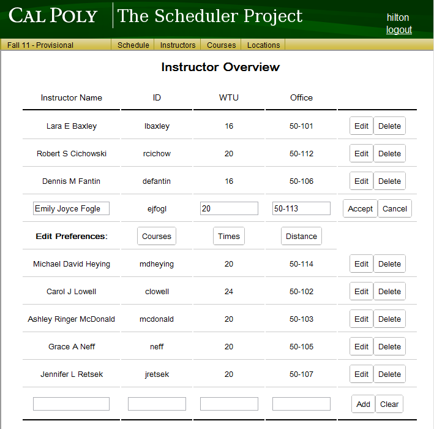
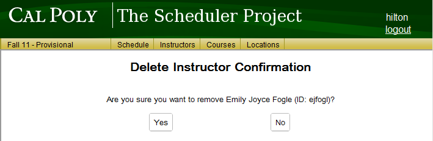

Once an administrator clicks on the Instructors button on the top menu, or clicks on the Instructors Add/Remove link on the home page, they are greeted with the instructor overview screen.

Figure 1: The main instructor list
The Instructor Overview list displays a list of all instructors saved for the department.
The user may add an instructor by entering the instructor's information into the spaces on the bottom row of the list. An example is shown in Figure 2. Once the information is entered, the user must click on the Add button to save the new professor to the list.
The user may edit any instructor by selecting the Edit button next to that instructor. This selection brings up the Edit mode for that instructor.
The user may delete any instructor by selecting the Delete button next to that instructor. This selection brings up the Delete Instructor Confirmation screen.
A new instructor's information is entered into the text boxes on the bottom row of the instructor overview list. Once the information is entered, the user must click on the Add button to save the new professor to the list.

Figure 2: Filling in a new instructor's information
Clicking on the Edit button next to an instructor will cause that instructor's row to extend to a second row as seen in Figure 3.

Figure 3: Edit an instructor's information
Any information about the instructor can be edited from this view. Additionally, the extension row provides buttons to navigate to other screens that allow the user to adjust the instructor's Course, Time, and Distance preferences.
Once the user is satisfied with their edits, the user must select the Accept button to save their changes to the instructor. Otherwise, the user's changes can be undone by selecting the Cancel button.
Clicking on the Delete button next to an instructor will cause a confirmation view to appear like in Figure 4.

Figure 4: Confirmation for deleting and instructor
For added certainty in the delete confirmation view, the prompt includes the instructor's user ID in addition to the instructor's name. In order to confirm the deletion of the stated instructor, the user must select the Yes button, otherwise the No button will cancel the deletion attempt. Upon selecting either button, the screen will change back to the Instructor Overview with the deleted instructor no longer in the list if the user had selected Yes.